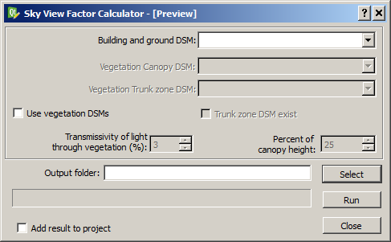
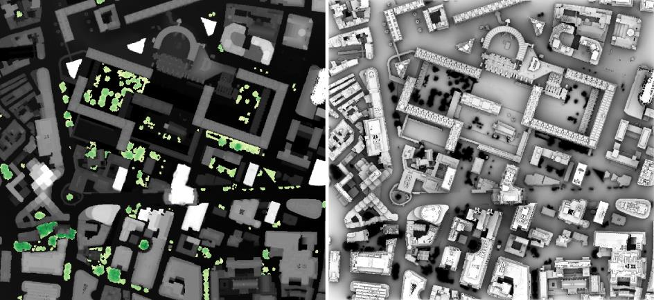

The Sky View Factor plugin can be used to generate pixel wise sky view
factor (SVF) using ground and building digital surface models (DSM). Optionally,
vegetation DSMs could also be used. By definition, SVF is the ratio of the
radiation received (or emitted) by a planar surface to the radiation emitted (or
received) by the entire hemispheric environment (Watson and Johnson 1987). It is
a dimensionless measure between zero and one, representing totally obstructed
and free spaces, respectively. The methodology that is used to generate SVF here
is described in Lindberg and Grimmond (2010).
The Sky View Factor Calculator is located at
UMEP -> Pre-Processor -> Urban Geometry -> Sky View Factor.
When you run plugin, you will see the dialog shown below. It consists of a
top section where input data is specified and a bottom section for specifying
output and for running the calculation.

A DSM (geoTIFF) consisting of ground and building heights.
A DSM (geoTIFF) consisting of pixels with vegetation heights above
ground. Pixels where no vegetation is present should be set to zero.
A DSM (geoTIFF) consisting of pixels with vegetation trunk zone heights
above ground. Pixels where no vegetation is present should be set to zero.
Tick this box if you want to include vegetation in the final SVF.
Tick this in if a trunk zone DSM already exist.
Percentage of light that is penetrating through vegetation. Default value
is set to 3 % according to Konarska et al. (2013).
If a trunk zone vegetation DSM is absent, this can be generated based on
the height of the Canopy DSM. The default percentage is set to 25%.
A specified folder where result will be saved.
This starts the calculations
If this is ticked in, the total SVF raster will be added to the map
canvas
This button closes the plugin.
Sixteen different files (geoTIFF) will be saved if vegetation DSM is
used. Otherwise, five different SVFs are saved. The main one is named
SkyViewFactor.tif and it shows the
total SVF (i.e. the amount sky that is seen from each pixel. The other files
created is for different directions (four cardinal points) as well as SVFs
divided up on various fractions such as only buildings, only vegetation etc. For
a detailed description, see Lindberg and Grimmond (2011).
The figure below shows an example of input data and the resulting SVF.
The left show a ground and building DSM (grayscale) DSM overlaid with a canopy
DSM (yellow to green). The right shows the total SVF.

- All DSMs need to have the same extent and pixel size.
- This plugin is computationally intensive i.e. large grids will take a
lot of time and very large grids will not be possible to use. Large grids e.g.
larger than 4000000 pixels should be tiled before.
Konarska J, Lindberg F, Larsson A, Thorsson S, Holmer B 2013.
Transmissivity of solar radiation through crowns of single urban
trees—application for outdoor thermal comfort modelling. Theoret. Appl.
Climatol., 1–14 (link
to paper)
Lindberg F, Grimmond CSB (2010) Continuous sky view factor maps from high
resolution urban digital elevation models. Clim Res 42:177–183 (link
to paper)
Lindberg, F., Grimmond, C.S.B., 2011a. The influence of vegetation and
building morphology on shadow patterns and mean radiant temperatures in urban
areas: model development and evaluation. Theoret. Appl. Climatol. 105, 311–323 (link
to paper)
Watson ID, Johnson GT (1987) Graphical estimation of skyview-factors in
urban environments. J Climatol 7: 193–19 (link
to paper)